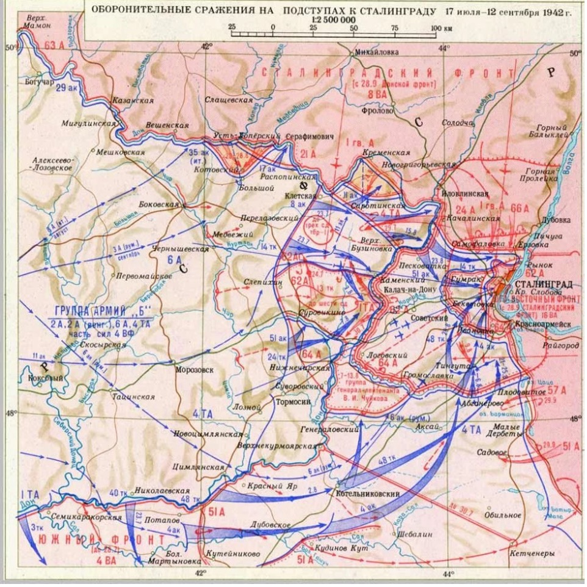

17 июля 1942 год
Летом 1942 г. на южном крыле советско-германского фронта была развернута наиболее крупная группировка немецких войск - группа армий «Юг» была разделена на две группы - «А» и «Б». Для наступления на Сталинградском направлении из состава группы армий «Б» выделялась 6-я полевая армия (командующий генерал-лейтенант Ф. Паулюс). К 17 июля она имела в своем составе до 14 дивизий.
Врагу противостоял созданный 12 июля Сталинградский фронт (63-я, 62-я, 64-я, 21-я армии, командующий Маршал Советского Союза С.К. Тимошенко, с 23 июля генерал-лейтенант В.Н. Гордов), который имел задачу занять и прочно оборонять 530-км рубеж по р. Дон от Павловска до Клетской и далее по линии Клетская, Суровикино, Суворовская, Верхнекурмоярская. Фронт создавался в крайне сложной обстановке. Бывшие резервные, не полностью укомплектованные 63-я, 62-я и 64-я армии запаздывали с прибытием в район Сталинграда и развертыванием на рубеже обороны. Передаваемые Сталинградскому фронту четыре дивизии бывшего Юго-Западного фронта были обескровлены. Врагу реально могли противостоять 12 дивизий 63-й и 64-й армий. На подступах к Сталинграду строились 4 оборонительных отвода: внешний, средний, внутренний и городской
Событие: 17 июля считается днем начала Сталинградской битвы. В этот день рубеже рек Чир и Цимла передовые отряды 62-й и 64-й Армий Сталинградского фронта встретились с авангардом 6-й немецкой армии. Взаимодействуя с авиацией 8-й воздушной, они оказали упорное сопротивление противнику. В конце концов, враг все же сбил передовые отряды с занимаемых позиций и подошел к главной полосе обороны войск Сталинградского фронта. Сопротивление советских войск заставило нацистское командование усилить 6-ю армию. Например, в танках он теперь имел двукратное превосходство.
